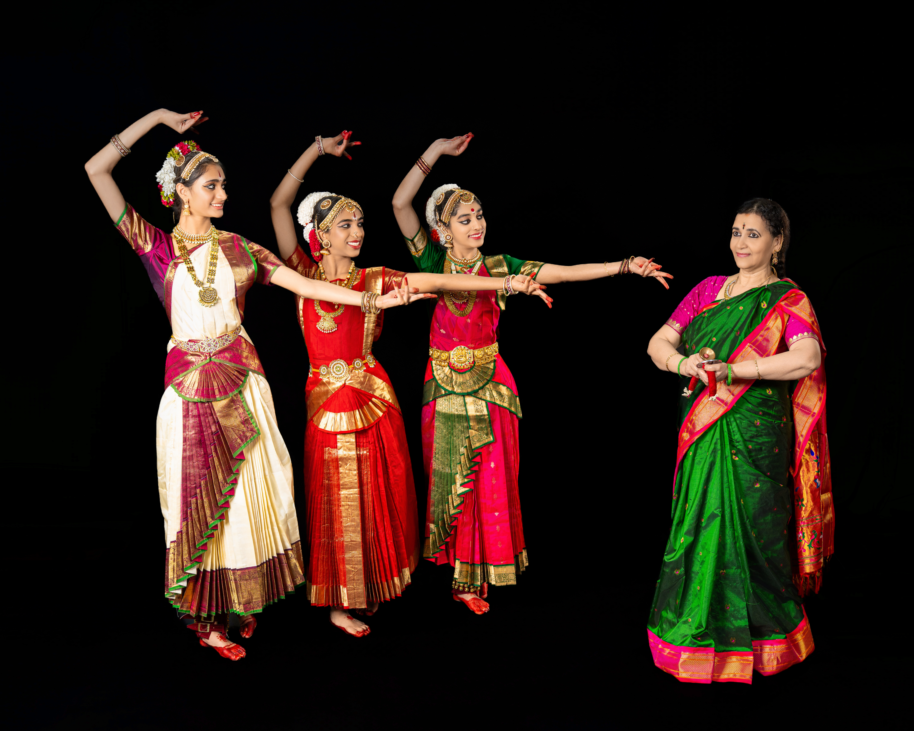

Meet the Guru
Smt. Bhavani Murthy of the Natana Manohari School of Performing Arts.
Guru – Smt. Bhavani Murthy
Bhavani Murthy has been a student, performer, and teacher of Bharatha Natyam and Kuchipudi styles for more than 37 years. She is the disciple of Mrs. Sudha Chandrasekar, Miss Bhanumati, and Mrs. Sheela Chandrasekar of Bangalore, India, in Bharatha Natyam, and Mrs. Sandhya Sree Athmakuri of Michigan in Kuchipudi.
She has presented her students at many organizations, charity shows, and her students have won prizes in competitions as well. She has attended many workshops with well-known Gurus from India. She loves choreographing classical and folk dances such as Kuravanji, Candle, Peacock, and Kolatam.
Since moving to Knoxville 10 years ago, she has presented her students in many different cultural shows every year. Through her teaching and her daughter, a professional dancer, she has given many programs for charities and raised funds for numerous causes including Aim for Seva, Asha for Education, Mirani Foundation, Haiti Earthquake Fund, TIWA, March of Dimes, and American Red Cross.
Bhavani has also conducted many Arangetrams of her students with live orchestras. She has served as a judge for several classical dance competitions, including ETSU Hungama show, UT Holi Competitions, and Dhandia Dhamak in Michigan. She received the South Arts Fellowship Grant in 2021.
She wishes to continue teaching and propagating these art forms so that younger generations can continue to showcase them and pass them on to the future.

